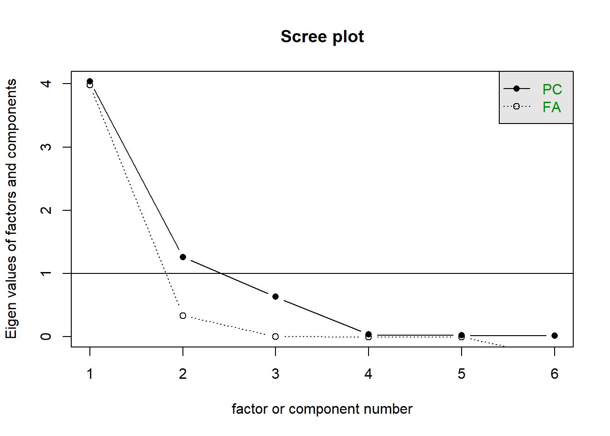
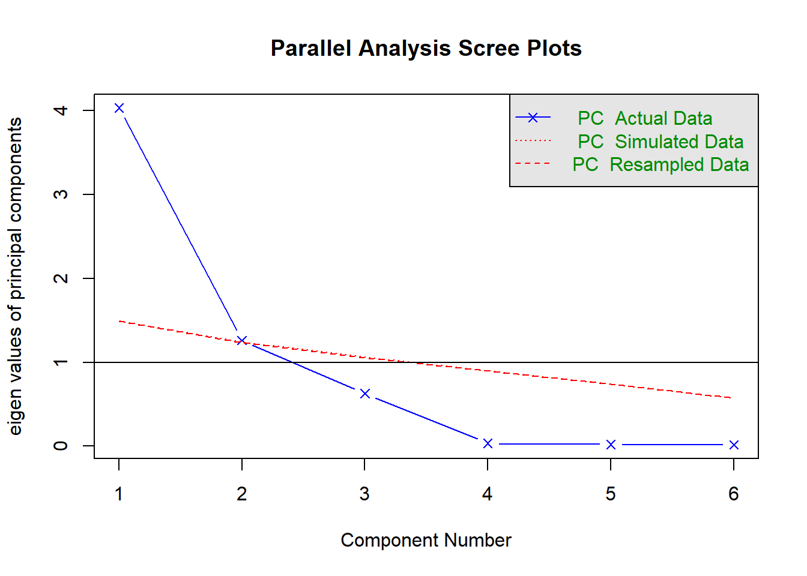

The dataset available at https://uoepsy.github.io/data/police_performance.csv contains records on fifty police officers who were rated in six different categories as part of an HR procedure. The rated skills were:
communication skills: commun
problem solving: probl_solv
logical ability: logical
learning ability: learn
physical ability: physical
appearance: appearance
The data also contains information on each police officer’s arrest rate (proportion of arrests that lead to criminal charges).
We are interested in if the skills ratings by HR are a good set of predictors of police officer success (as indicated by their arrest rate).
Question 1
Load the job performance data into R and call it job. Check whether or not the data were read correctly into R - do the dimensions correspond to the description of the data above?
Provide descriptive statistics for each variable in the dataset.
Solution 2. We now inspect some descriptive statistics for each variable in the dataset:
# Quick summarysummary(job)
commun probl_solv logical learn physical
Min. :12.0 Min. :48.0 Min. :20 Min. :44.0 Min. :48.0
1st Qu.:16.0 1st Qu.:52.2 1st Qu.:22 1st Qu.:48.0 1st Qu.:52.2
Median :18.0 Median :54.0 Median :24 Median :50.0 Median :54.0
Mean :17.7 Mean :54.2 Mean :24 Mean :50.3 Mean :54.2
3rd Qu.:19.8 3rd Qu.:56.0 3rd Qu.:26 3rd Qu.:52.0 3rd Qu.:56.0
Max. :24.0 Max. :59.0 Max. :31 Max. :56.0 Max. :59.0
appearance arrest_rate
Min. :16.0 Min. :0.000
1st Qu.:19.0 1st Qu.:0.371
Median :21.0 Median :0.565
Mean :21.1 Mean :0.512
3rd Qu.:23.0 3rd Qu.:0.669
Max. :28.0 Max. :0.935
OPTIONAL
If you wish to create a nice looking table for a report, you could try the following code. However, I should warn you: this code is quite difficult to understand - have a go at running sections at a time - slowly adding each function in the pipe to see how it changes.
library(gt)# Mean and SD of each variablejob |>summarise(across(everything(), list(M = mean, SD = sd))) |>pivot_longer(everything()) |>mutate(value =round(value, 2),name =str_replace(name, '_M', '.M'),name =str_replace(name, '_SD', '.SD') ) |>separate(name, into =c('variable', 'summary'), sep ='\\.') |>pivot_wider(names_from = summary, values_from = value) |>gt()
variable
M
SD
commun
17.68
2.74
probl_solv
54.16
2.41
logical
24.02
2.49
learn
50.28
2.84
physical
54.16
2.41
appearance
21.06
2.99
arrest_rate
0.51
0.23
Question 3
Working with only the skills ratings (not the arrest rate - we’ll come back to that right at the end), investigate whether or not the variables are highly correlated and explain whether or not you PCA might be useful in this case.
Hints
We only have 6 variables here, but if we had many, how might you visualise cor(job)? Try the below:
library(pheatmap)pheatmap(cor(data))
Solution 3. Let’s start by looking at the correlation matrix of the data:
Figure 1: Correlation between the variables in the ``Job’’ dataset
The correlation between the variables seems to be quite large (it doesn’t matter about direction here, only magnitude; if negative correlations were present, we would think in absolute value).
There appears to be a group of highly correlated variables comprising physical ability, appearance, communication skills, and learning ability which are correlated among themselves but uncorrelated with another group of variables. The second group comprises problem solving and logical ability.
This suggests that PCA might be useful in this problem to reduce the dimensionality without a significant loss of information.
Question 4
Look at the variance of the skills ratings in the data set. Do you think that PCA should be carried on the covariance matrix or the correlation matrix? Or does it not matter?
As the standard deviations appear to be fairly similar (and so will the variances) we can perform PCA using the covariance matrix if we want and it probably won’t differ too much from the correlation matrix.
Question 5
Using the principal() function from the psych package, we conduct a PCA of the job skills.
Looking at the PCA output, how many principal components would you keep if you were following the cumulative proportion of explained variance criterion?
From the result we see that only the first two principal components have eigenvalues greater than 1, so this rule suggests to keep 2 PCs only.
Question 8
According to a scree plot, how many principal components would you retain?
Solution 8.
scree(cor(job_skills))

This criterion could suggest 1, or maybe 3?
Question 9
How many components should we keep according to the MAP method?
Solution 9.
VSS(job_skills, plot=FALSE, method="pc", n =ncol(job_skills))
Very Simple Structure
Call: vss(x = x, n = n, rotate = rotate, diagonal = diagonal, fm = fm,
n.obs = n.obs, plot = plot, title = title, use = use, cor = cor,
method = "pc")
VSS complexity 1 achieves a maximimum of 0.95 with 3 factors
VSS complexity 2 achieves a maximimum of 0.98 with 3 factors
The Velicer MAP achieves a minimum of 0.12 with 2 factors
BIC achieves a minimum of -24.1 with 1 factors
Sample Size adjusted BIC achieves a minimum of -2.87 with 2 factors
Statistics by number of factors
vss1 vss2 map dof chisq prob sqresid fit RMSEA BIC SABIC complex eChisq
1 0.89 0.00 0.17 9 1.1e+01 0.27 2.046 0.89 0.065 -24 4.1 1.0 1.1e+01
2 0.92 0.96 0.12 4 2.3e-01 0.99 0.802 0.96 0.000 -15 -2.9 1.1 1.5e-03
3 0.95 0.98 0.29 0 1.5e-01 NA 0.044 1.00 NA NA NA 1.1 1.8e-04
4 0.92 0.96 0.50 -3 9.2e-07 NA 0.777 0.96 NA NA NA 1.1 1.6e-09
5 0.92 0.96 1.00 -5 5.1e-11 NA 0.788 0.96 NA NA NA 1.1 1.5e-13
6 0.92 0.96 NA -6 5.0e-11 NA 0.788 0.96 NA NA NA 1.1 1.5e-13
SRMR eCRMS eBIC
1 8.5e-02 0.1096 -24
2 1.0e-03 0.0019 -16
3 3.5e-04 NA NA
4 1.0e-06 NA NA
5 9.8e-09 NA NA
6 9.8e-09 NA NA
According to the MAP criterion we should keep 2 principal components.
Question 10
How many components should we keep according to parallel analysis?
Solution 10.
fa.parallel(job_skills, fa="pc", n.iter =500)

Parallel analysis suggests that the number of factors = NA and the number of components = 1
Parallel analysis suggests to keep 1 principal component only as there is only one PC with an eigenvalue higher than the simulated random ones in red.
Question 11
Based on all of the criteria above, make a decision on how many components you will keep.
Solution 11.
method
recommendation
explaining >80% variance
keep 2 components
kaiser’s rule
keep 2 components
scree plot
keep 1 or 3 components? (subjective)
MAP
keep 2 components
parallel analysis
keep 1 component
Because three out of the five selection criteria above suggest to keep 2 principal components, here we will keep 2 components. This solution explains a reasonable proportion of the variance (88%), but it would be perfectly defensible to instead go for 3, explaining 98%
Question 12
perform PCA to extract the desired number of components
All loadings for the first PC seem to have a similar magnitude apart from probl_solv and logical which are closer to zero. The first component looks like a sort of average of the officers performance scores excluding problem solving and logical ability.
The second principal component, which explains only 21% of the total variance, has two loadings clearly distant from zero: the ones associated to problem solving and logical ability. It distinguishes police officers with strong logical and problem solving skills and low scores on other skills (note the negative magnitudes).
For interpretation purposes, it might help hiding very small loadings. This can be done by specifying the cutoff value in the print() function. However, this only works when you pass the loadings for all the PCs:
print(job_pca2$loadings, cutoff =0.3)
Loadings:
PC1 PC2
commun 0.984
probl_solv 0.810
logical 0.329 0.747
learn 0.987
physical 0.988
appearance 0.979
PC1 PC2
SS loadings 4.035 1.261
Proportion Var 0.673 0.210
Cumulative Var 0.673 0.883
Question 14
Join the principal component scores for your retained components to the original dataset which has the arrest rates in.
Then fit a linear model to look at how the arrest rate of police officers is predicted by the two components representing different composites of the skills ratings by HR.
Check for multicollinearity between your predictors. How does this compare to a model which uses all 6 of the original variables instead?
Hints
We can get out scores using mypca$scores. We can add them to an existing dataset by just adding them as a new column:
data |>mutate(score1 = mypca$scores[,1] )
To examine multicollinearity - try vif() from the car package.
Solution 14.
# add the PCA scores to the datasetjob <- job |>mutate(pc1 = job_pca2$scores[,1],pc2 = job_pca2$scores[,2] )# use the scores in an analysismod <-lm(arrest_rate ~ pc1 + pc2, data = job)# multicollinearity isn't a problem, because the components are orthogonal!! library(car)vif(mod)
pc1 pc2
1 1
lm(arrest_rate ~ commun+probl_solv+logical+learn+physical+appearance, data = job) |>vif()